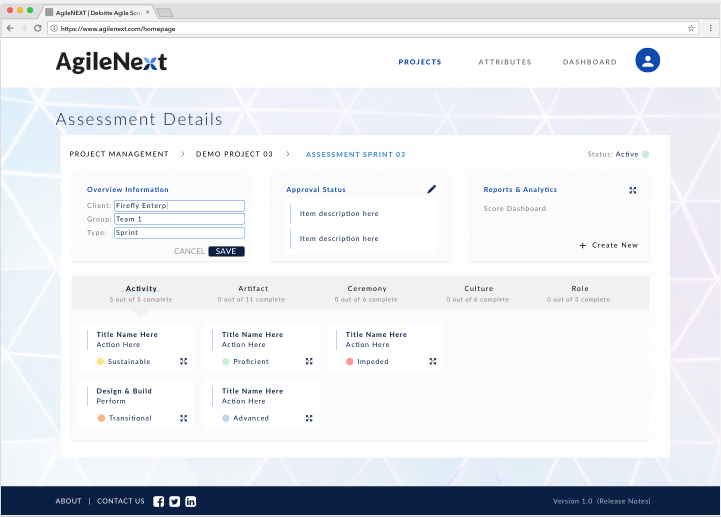
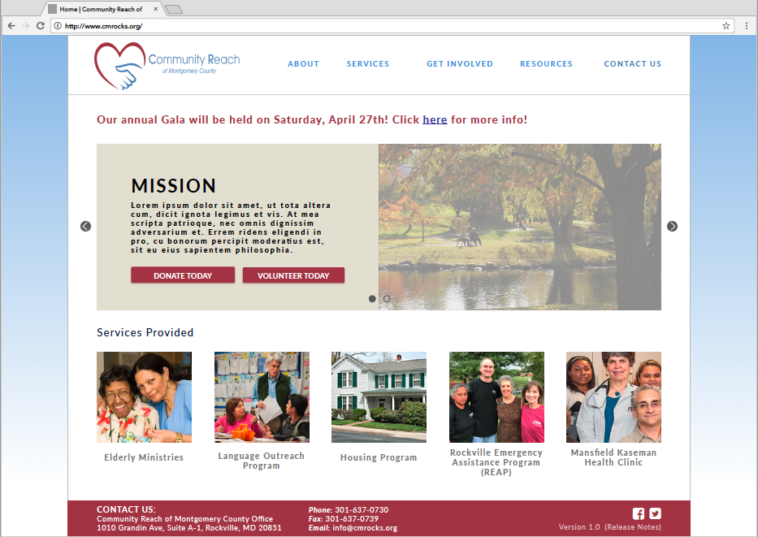

My Artwork
Problem: Former employer wanted to create a unique agile management tool that does not exist in the market
Challenges:How to make the software standout from competitors while also creating a new brand from scratch
Solution: Collaboration with management, engineers, and Subject Matter Experts to gather user requirements and meeting on a weekly basis
Results: The software was introduced to the market. Below is an example of an "edit" function
Problem:Local nonprofit wanted to rebrand and modernize current website
Challenges:Short deadline and client had limited technical expertise
Solution:Use-Centered Design to conduct interviews, market research, and building wireframes, designs and clickable prototypes
Results:The client invited the team to an banquet to reveal the new website design to everyone in the organization
Problem: I did not have a portfolio.
Challenges: Originality by not using a template. I had 3 days to create my vision from scratch.
Solution: Build my portfolio website from scratch.
Results: You're looking at it! I created this website from scratch
using HTML/CSS/Javascript.
I wrote my code in Atom and then used Git Bash to
push my code to GitHub.

Problem: IoT Conference wants an infographic to showcase data.
Challenges: Short timeline and a lot of textual content.
Solution:Weekly iterations to confirm design conveys data.
Results:The infographic below is a draft and has not been officially approved.